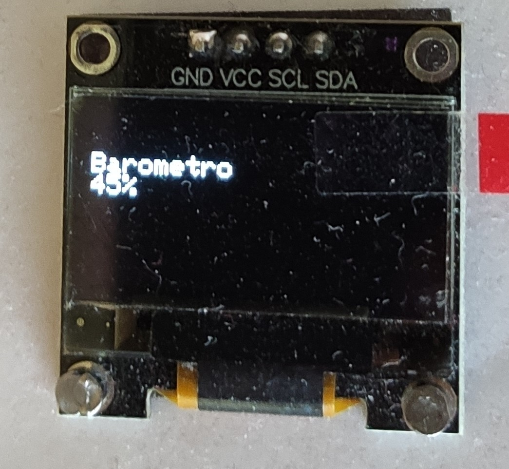
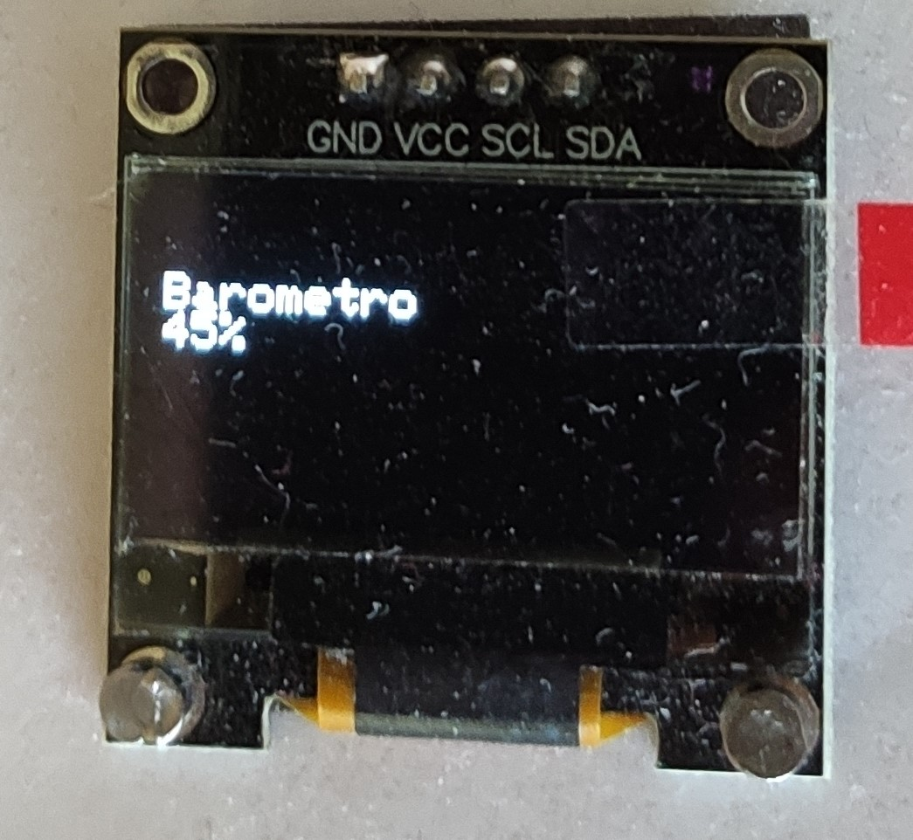

Montaje pantalla O-led y DHT11(Sensor de humedad y temperatura)
Lo primero que hice, fue probar de forma externa la pantalla O-led para saber cómo funcionaba. Una vez sabía lo mínimo para que funcionase, puse el panel pegado a la caja. Como me resulto imposible pegar la cinta aislante a los pines los soldé con ayuda de mi padre que ya había soldado previamente para mejorar sus coches del Scalextric. Después comprobé que funcionase con un hola mundo y decidí pasar a conectar el DHT11(sensor de temperatura y humedad). Con ayuda de la tercera práctica en unos minutos ya estaba funcionando.
Para hacer funcionar el sensor DHT11. Me base principalmente en la tercera práctica del curso. Lo único que para que no fastidiase a otros elementos del Arduino, incluí un botón que me cambia de modo y a la vez actualiza los datos de temperatura y humedad.
 


Para actualizar los datos de temperatura hice que en cada loop tenga un delay de 5 ms, por lo que introduje una variable que se suma hasta 300 y se reinicia por lo que cada segundo y medio estos datos se actualizan.
Montaje del servo y fotorresitor
Uno de los apartados más costosos para que quedase bien implementado su funcionamiento.
Me base en la práctica del servo para el tema de los drivers.
Incluí una fotorresistencia para que el servo moviese con una manilla de reloj según la cantidad de luz que le llega. Por lo que en “high” es cuando recibe mucha luz (“yo digo rayos UV que es mentira”), normal es la cantidad de luz que recibe por la ventana la fotorresistencia y “low” cuando no recibe luz.

*Quiero dejar claro que no mide los rayos UV, mide la cantidad de luz.


TILT y leds
Uso el tilt como sensor, es decir si la caja se agita o el tilt se mueve. A través de los leds se avisa de que hay un “terremoto”.
Sin lugar a duda la etapa más dura de mi trabajo. Tuve que soldar 13 leds y luego conectarlos de forma paralela. Me dejaron de funcionar 2. No quedaron muy bien asentados, aunque la función la cumplen, pero sin lugar a duda esto ha sido lo más costoso.

En cuanto código muy simple, pero en cuanto organización y poner los leds, comprobar los polos, etc. Al final me llevo 2 días enteros.
A pesar del esfuerzo tampoco quedo muy bien.